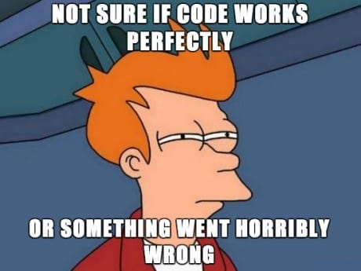

Before I could start building a website, I spent a lot of time learning from Youtube and HTML/CSS related texts📚 When I felt I had enough to start, I forged ahead knowing I had minimal knowledge. All of what you see on this webpage is what I have learned. In the "resource" tab, you will see all of the materials I have used.
First I had to buy a domain for my host, I used a simple google search and found a domain to purchase💵 I used this link to buy one➡️Google Domains Next I located a host called GitHub which was another learning experience. After that,I had to connect my domain (marypryan.com) to my host. Afterwards I started to make edits, commits through GitHub until I discovered Visual Studio Code(VSC) which is essentially a fast source code editor. After connecting my VSC with my GitHub and then downloading these applications to my desktop I was able to be more effective and efficient in my coding.
Some challenges that I encountered was my "parent" folder:My folder was to be a replica of my host which had corresponded with my VSC. For some reason I was not seeing any changes. I realized that I had a duplicate copy "child folder?" of my "parent" folder stored on my desktop. I then had to access my GitHub folder onlyusing "Finder" to minimize repeat of ineffective codes. Another set back was not being meticulous of texts in coding which showed after making several "committs". Which is why I used "Tryit Editor V3.6"( in resource page) Overall, debugging was my hardest challenge, my goal is to train myself to plan more systematically. ..
My fire cannot be contained as I blaze through life,
water will calm my flames but the smoke you see
will carry on for miles!
-M.Ryan
